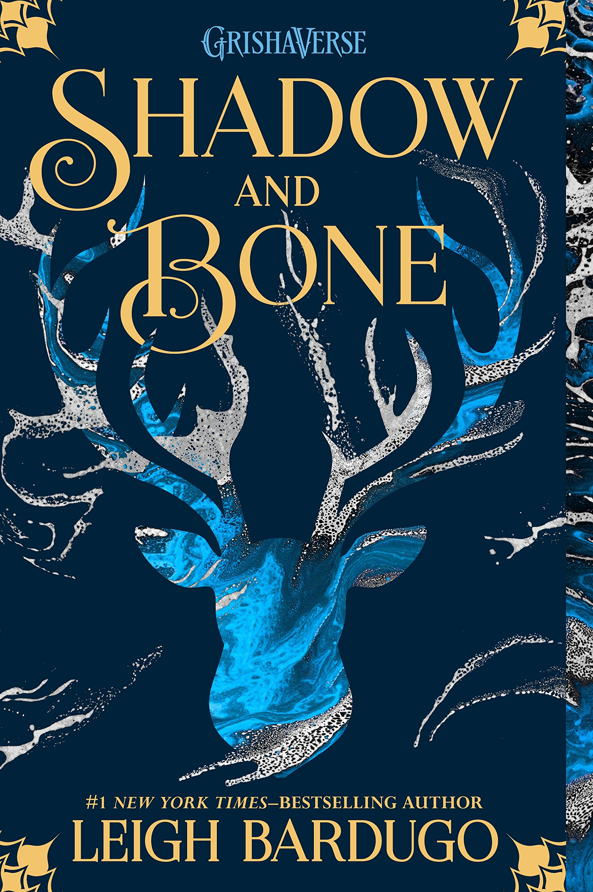
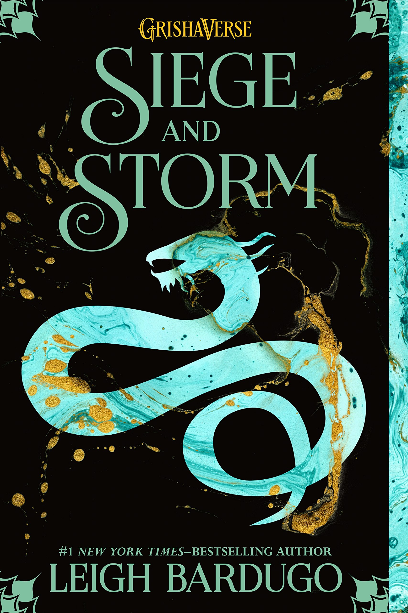
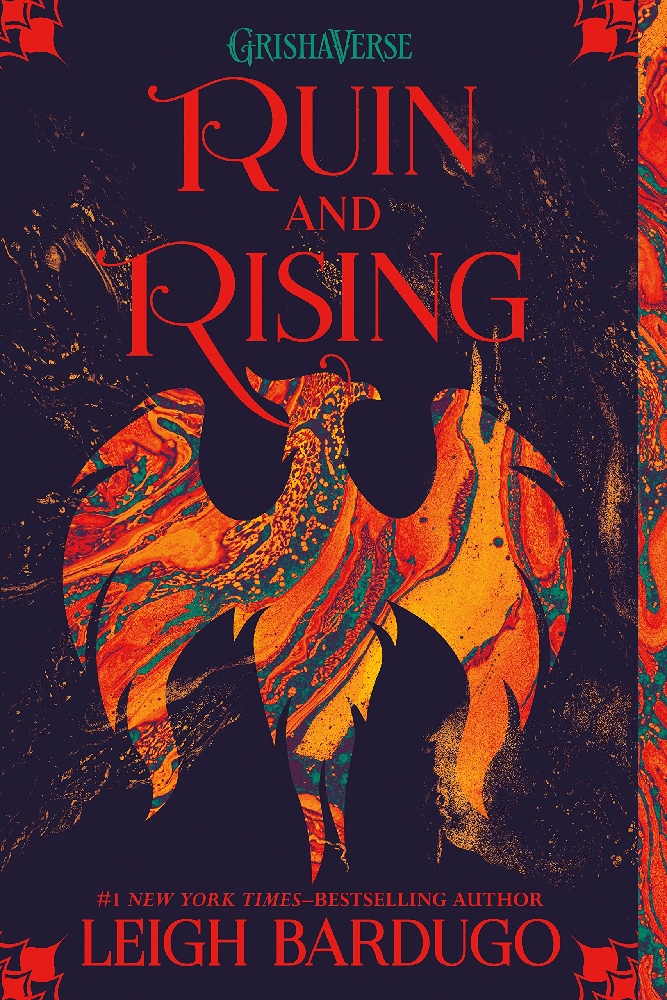

 The novel is narrated by Alina Starkov, a teenage orphan who grows up in the Russia-inspired land of Ravka when, unexpectedly harnessing a power she never knew she had in order to save her childhood best friend, she becomes a target of intrigue and violence. The Darkling, a creature of seductive charm and terrifying power, is the leader of the Grisha. It is the first book in the Shadow and Bone trilogy.
 Hunted across the True Sea, haunted by the lives she took on the Fold, Alina Starkov must try to make a life with Mal in an unfamiliar land. She finds starting new is not easy while keeping her identity as the Sun Summoner a secret. She can’t outrun her past or her destiny for long.Somehow, she will have to choose between her country, her power, and the love she always thought would guide her--or risk losing everything to the oncoming storm.
 The capital has fallen. The Darkling rules Ravka from his shadow throne. Now the nation's fate rests with a broken Sun Summoner, a disgraced tracker, and the shattered remnants of a once-great magical army.Alina Starkov will have to forge new alliances and put aside old rivalries as she and Mal race to find the last of Morozova's amplifiers. But as she begins to unravel the Darkling's secrets, she reveals a past that will forever alter her understanding of the bond they share and the power she wields. The firebird is the one thing that stands between Ravka and destruction—and claiming it could cost Alina the very future she’s fighting for.